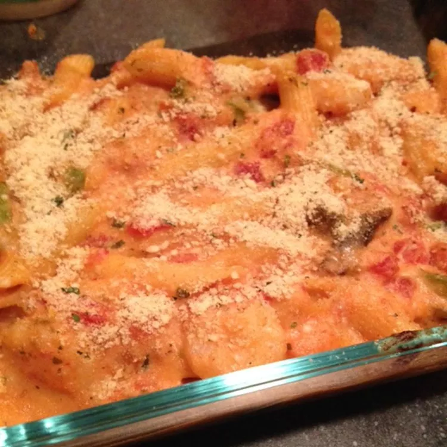

Cheesy Shrimp Alfredo Bake
Description
A delicious mix of shrimp, pasta, Alfredo sauce, pesto, and vegetables makes for a quick, easy dinner that's easy to freeze or reheat for lunch the next day. Can be served alone or with garlic bread or breadsticks. Can be frozen for up to 3 months.
Ingredients
- 3/4 (16 ounce) package Penne Rigate
- 2 tablespoons olive oil
- 1 pound cooked medium shrimp with tails intact
- 1 cup chopped green bell pepper
- 1 cup diced baby bella mushrooms
- 1 (16 ounce) jar Alfredo sauce
- 1 (15 ounce) can diced tomatoes
- 2 cups shredded Italian cheese blend
- 1.5 cups grated Parmesan cheese, divided
- 2 (6 ounce) tubs sun-dried tomato pesto
- 0.5 cup seasoned bread crumbs
- Preheat the oven to 350 degrees F (175 degrees C).
- Bring a large pot of lightly salted water to a boil. Add penne and cook, stirring occasionally, until tender yet firm to the bite, 8 to 10 minutes.
- Meanwhile, heat olive oil in a pan over medium-low heat. Add shrimp, green pepper, and mushrooms; saute until vegetables soften, about 10 minutes.
- Drain penne. Mix Alfredo sauce, tomatoes, Italian cheese blend, and 1 cup Parmesan cheese in a large bowl. Add shrimp mixture and mix thoroughly. Add pesto and mix again. Fold in penne.
- Transfer penne mixture to a casserole dish. Mix remaining Parmesan cheese with bread crumbs; sprinkle over the casserole.
- Bake in the preheated oven until bubbling, 25 to 30 minutes.